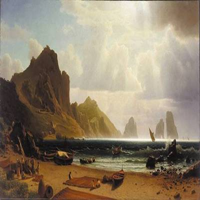

Albert Bierstadt


Albert Bierstadt |
||
| Biography | ||
|---|---|---|
|  |
|
|
Albert Bierstadt (January 7, 1830 – February 18, 1902) was a German-American painter best known for his lavish, sweeping landscapes of the American West. To paint the scenes, Bierstadt joined several journeys of the Westward Expansion. Though not the first artist to record these sites, Bierstadt was the foremost painter of these scenes for the remainder of the 19th century. Born in Prussia, Bierstadt was brought to the United States at the age of one by his parents. He later returned to study painting for several years in Düsseldorf. He became part of the Hudson River School in New York, an informal group of like-minded painters who started painting along the Hudson River. Their style was based on carefully detailed paintings with romantic, almost glowing lighting, sometimes called luminism. An important interpreter of the western landscape, Bierstadt, along with Thomas Moran, is also grouped with the Rocky Mountain School.
Below is a YouTube video featuring the special exhibition "Albert Bierstadt: Witness to a Changing West," on view at the Buffalo Bill Center of the West June 8 - September 30, 2018, then at Gilcrease Museum November 3, 2018 - February 10, 2019. Produced by Buffalo Bill Center of the West and Gilcrease Museum in association with Fire Tribe, Inc.

| Biography | ||
|---|---|---|
Winslow Homer (February 24, 1836 – September 29, 1910) was an American landscape painter and printmaker, best known for his marine subjects. He is considered one of the foremost painters in 19th-century America and a preeminent figure in American art.
Largely self-taught, Homer began his career working as a commercial illustrator. He subsequently took up oil painting and produced major studio works characterized by the weight and density he exploited from the medium. He also worked extensively in watercolor, creating a fluid and prolific oeuvre, primarily chronicling his working vacations.
Largely self-taught, Homer began his career working as a commercial illustrator. He subsequently took up oil painting and produced major studio works characterized by the weight and density he exploited from the medium. He also worked extensively in watercolor, creating a fluid and prolific oeuvre, primarily chronicling his working vacations.

| Biography | ||
|---|---|---|
Mary Stevenson Cassatt (May 22, 1844 – June 14, 1926) was an American painter and printmaker. She was born in Allegheny City, Pennsylvania (Now part of Pittsburgh's North Side), but lived much of her adult life in France, where she first befriended Edgar Degas and later exhibited among the Impressionists. Cassatt often created images of the social and private lives of women, with particular emphasis on the intimate bonds between mothers and children.
She was described by Gustave Geffroy in 1894 as one of "les trois grandes dames" (the three great ladies) of Impressionism alongside Marie Bracquemond and Berthe Morisot.

| Biography | ||||
|---|---|---|---|---|
James Abbott McNeill Whistler (July 11, 1834 – July 17, 1903) was an American artist, active during the American Gilded Age and based primarily in the United Kingdom. He was averse to sentimentality and moral allusion in painting, and was a leading proponent of the credo "art for art's sake". His famous signature for his paintings was in the shape of a stylized butterfly possessing a long stinger for a tail. The symbol was apt, for it combined both aspects of his personality: his art is characterized by a subtle delicacy, while his public persona was combative. He found a parallel between painting and music and entitled many of his paintings "arrangements", "harmonies", and "nocturnes", emphasizing the primacy of tonal harmony. His most famous painting is Arrangement in Grey and Black No. 1 (1871), commonly known as Whistler's Mother, the revered and often parodied portrait of motherhood. Whistler influenced the art world and the broader culture of his time with his artistic theories and his friendships with leading artists and writers.